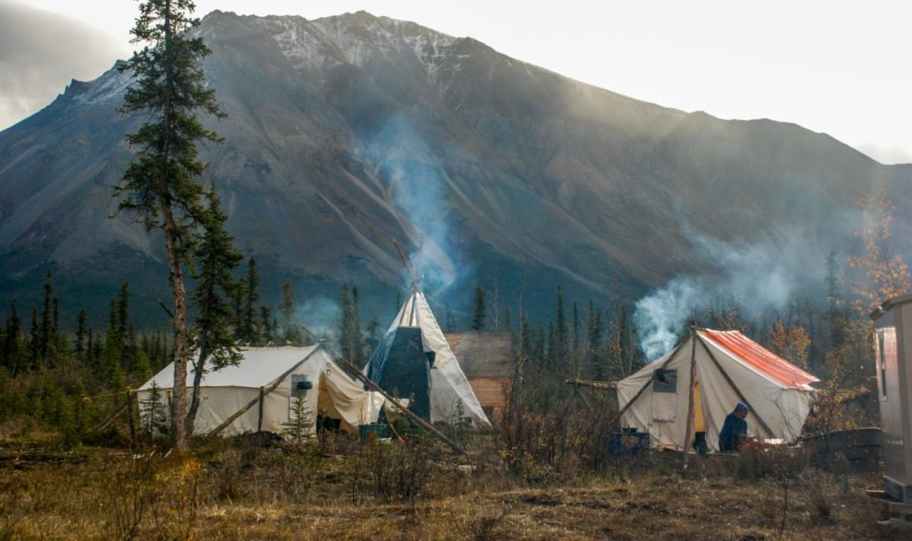
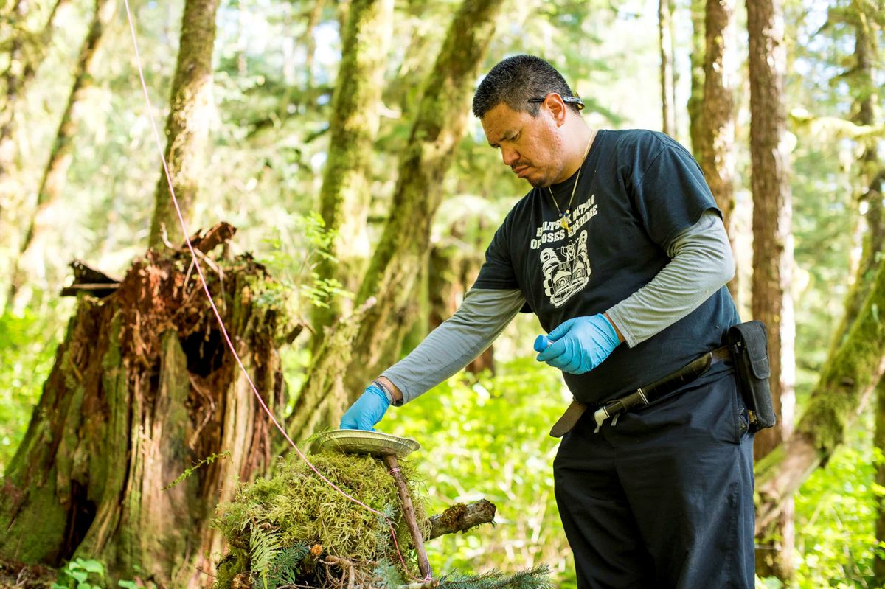
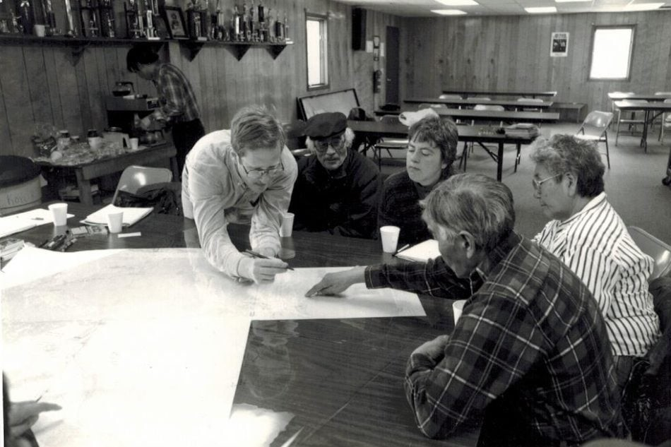
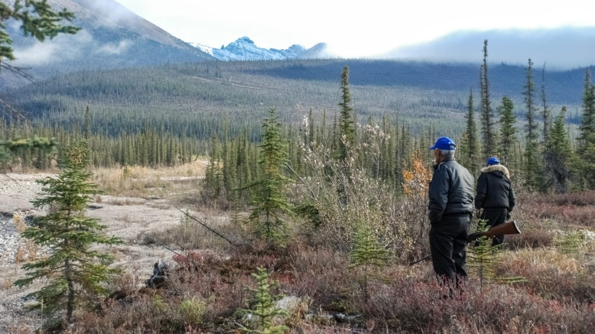

From grizzly bears in areas undocumented by Western science to a possible new fast-running subtype of caribou, traditional knowledge is enriching scientific information about our natural world
By Jimmy Thomson
June 20, 2019
Share
Jean Polfus had a moment of clarity sitting around a long oval table in Tulít’a, a community on the Mackenzie River in central N.W.T. It started with confusion over a pair of Dene language words.
Goecha gots’anele. The words refer to a process in hunting whereby a hunter will circle around downwind to head off a caribou or a moose, taking advantage of an instinctual attempt to catch a predator’s scent.
Polfus, rolling the unfamiliar term around in her mind, began to absorb some of its meaning. Goecha gots’anele. It related to wind and even to textures of snow. It related to particular places. It encompassed an entire way of thinking and the relationship between the hunter and the caribou; between the wind and the land.
It crystallized in her mind how language is rooted in the land. And the land, in turn, reflects the culture.
“It’s just absolutely beautiful how connected the words are to the land, and how connected the words are to the relationships people have with the animals,” she says.
That moment in Tulít’a in 2014 set Polfus on a course of interdisciplinary research that would never stray far from her newfound appreciation for the knowledge around her.
“It’s hard to really understand how people can perceive the world in a different way when they use a different language that you can’t understand,” she says. “I just got a glimpse of it.”
It’s an understanding shared through generations of Dene people. As one of Polfus’ community advisors, Walter Bayha, put it to her, quoting his own grandfather, “Our history is written on the land. The language comes from the land.”

A camp in the Mackenzie mountain range in central Northwest Territories, where non-Indigenous scientists and Indigenous knowledge-holders work side-by-side. Photo: Jean Polfus.
More scientists are immersing themselves in Indigenous communities
This wealth of shared knowledge did not spring forth at random. Polfus has spent the last seven years living in Tulít’a, a community of less than 500 people along the Mackenzie River. She built her career studying various types of caribou — mountain, boreal and barren ground, all of which live there — and how they interact with different habitats.
Living in the community gave her an irreplaceable edge in understanding the caribou. More importantly, it granted her the time and space to win the trust of community members. Their knowledge shaped her work.
Polfus is part of a growing movement of scientists who don’t just “consult” with Indigenous communities — they immerse themselves in them, learn from them, share knowledge and return something to the community in the process. The Dene call this mode of thinking “łeghágots’enetę,” translated to “learning together.”
“It’s finding the questions that you have in common,” says Aerin Jacob, a conservation scientist with the Yellowstone to Yukon Conservation Initiative (Y2Y). “Where’s the overlap between [questions] communities want to have answered and what is your expertise?”
That overlap can be a place of both great opportunity and great resistance. It’s the site of an ongoing clash of vibrant traditions, a stubborn establishment and curious minds.
And in some places, in some ways, it just might be the future of science.
Changing science
In 2017, the three largest federal funding bodies for science, health and social science research in Canada announced a brand new type of grant. Indigenous Research Capacity and Reconciliation Connection Grants grants of up to $50,000 were awarded the following year to projects that “identify new ways of doing research with Indigenous communities.”
The new awards were a response to the Truth and Reconciliation Commission’s 65th call to action: to establish a national research program to advance the understanding of reconciliation.
Importantly, more than half of the grants were dedicated to Indigenous not-for-profit organizations — not universities.
Internationally, the scientific establishment has been taking notice. Community-involved science received a strong endorsement in a June editorial in Science co-signed by Jane Lubchenko, former administrator of the U.S. National Oceanic and Atmospheric Administration.
“Expanding the range of effective solutions and scaling them globally requires scientists to engage actively with communities,” the endorsing authors wrote.
Jacob says this broader acknowledgment is an important step to legitimizing research that falls outside of the academic establishment, adding that the movement is still finding its feet.
“It’s increasingly recognized by funding agencies as being important, but that doesn’t translate yet into huge amounts of research funding,” she says.
Still, the conversation has evolved a long way from how things were done in the not-too-distant past, when there was no guarantee that researchers would even engage with Indigenous communities more than absolutely necessary.
“I think 10 years ago it was a really progressive idea to even table your findings at a community meeting,” says Megan Adams, a PhD candidate at the University of Victoria.
Adams has been working out of Rivers Inlet on the central coast of B.C., in Wuikinuxv First Nation territory, in close collaboration with community members. From the very beginning, that collaboration has meant going much farther than sharing a slideshow over coffee.
In the first two weeks of Adams’s graduate program — when she was supposed to be starting classes at the University of Victoria — her supervisor, Chris Darimont, instead sent her to Wuikinuxv to listen to community members.
Western science seen as ‘a tool’ to stop grizzly trophy hunt
The stunning rainforest inlet, 100 kilometres north of Port Hardy, B.C., is home to abundant salmon runs that power local food, social and ceremonial fishing, as well as a sport-fishing industry.
It’s also home to a large and very visible grizzly bear population.
“Where I work, bears and people live side-by-side,” Adams says.
The community wanted to know more about the bears’ diets and how that could inform their harvesting practices.
“If bears don’t get enough food, not only do people have to see bears — who they care about — suffer, they also face increased bear-human conflict,” Adams says. “This is about food security for you, and food security for bears.”

Heiltsuk researcher Howard Humchitt collects samples of bear fur in his traditional territory. Photo: April Bencze
Throughout her research, Adams checked in with elders and community members. They directed her collaborative work with the Nation. But the community wasn’t simply in search of information out of a sense of objectivity in the tradition of Western science. Their goal was to establish an evidentiary basis, parallel to their own traditional knowledge, to stop the grizzly bear trophy hunt and they saw Adams’s research as a means to that end.
“Western science was one of many tools they were using to stop the hunt,” Adams says.
Science holds its own objectivity in high regard. But Anne Salomon, associate professor at Simon Fraser University, says scientists who believe in their own objectivity are fooling themselves. Scientists are operating from an unavoidable position of bias, from the way they’re trained, to their values and beliefs, to the ways they formulate questions and gather data, she points out.
“It’s farcical to think that any science is unbiased,” Salomon says. “We do what we can to still get an approximation of the truth we’re interested in, in the least biased way possible.”
Asking for consent from Indigenous communities
Salomon, regarded as one of the foremost practitioners of community-involved ecology research in Canada, learned her approach early on at the Bamfield Marine Sciences Centre. All ecological research projects at Bamfield, no matter how small, are brought to the Huu-ay-aht First Nation for approval first if they involve Huu-ay-aht lands.
Salomon thought that was just how things were done, so when she arrived in Alaska she approached the local Sugpiaq villages to ask for their input into her work surveying the creatures that live between high and low tide.
What they told her formed the basis for her research.
“It was in talking with the chief and talking with the people that they told me about the decline in this particular chiton that led to all this work,” she says. The community wanted to know why. “That’s such an interesting question ecologically, and also in terms of conservation.”
The species in decline, the leather chiton, turned out to be a keystone species in that ecosystem, a species whose presence or absence has knock-on effects for the entire food web. In picking up on that trend, the Sugpiaq had noticed something resource managers had missed, and they noticed it because the community has an interest in the species as a resource — and because it was steps from their front doors. That is often true of Indigenous communities, Salomon says, and that wellspring of local knowledge and curiosity draws her back to them again and again.
“Theirs is a deeply marginalized voice — when in reality it should be revered,” she says.
Today she believes scientists have a much more pressing duty to consult with Indigenous communities. Ḵii’iljuus (Barbara Wilson), a member of the Haida Nation, convinced her that the duty was grounded in the principles of the United Nations Declaration on the Rights of Indigenous Peoples. The requirement for “free, prior and informed consent” applies to researchers, Salomon says, and that means accepting the answer.
“When you ask for consent, you have to be prepared for ‘no,’ ” she says.
The work Adams has done with First Nations along the central coast has also combined traditional knowledge from the community with modern scientific approaches. Using local knowledge has helped them establish shifts in the bears’ habitats dating back well into the past, further than science alone would allow. It has led to renewed understanding of the multifaceted, deep interactions between bears and salmon, involving the communities at every stage.
“When we started that habitat work, the province didn’t believe the Kitasoo [Kitasoo/Xaixais First Nation] were seeing grizzly bears on islands,” Adams says.
People who had spent their entire lives in close contact with grizzly and black bears would be told the obvious by a provincial scientist: that black bears, too, can look brown. Backing up what was already well known by the local First Nations with knowledge that was more palatable to government employees was one part of building the case for that knowledge to be accepted by the government.
“The dialogue has really changed.”
‘We’ve been studied to death’
The Heiltsuk First Nation’s sprawling coastal rainforest territory borders that of Wuikinuxv First Nation to the northwest. It’s known for its stormy waters, mysterious spirit bears, abundant marine life and towering red cedar, Douglas fir and hemlock trees. That rich coastline has been threatened over and over again over the past decade by overfishing, diesel spills and the prospect of unwelcome crude oil pipelines.
The Heiltsuk’s unceded lands overlap in the south with those of Wuikinuxv First Nation at Calvert Island — home to the Hakai Institute, a relatively new research organization that focuses on coastal ecosystems.
Hakai came to Calvert Island in 2014. It wanted to build out its field research station to conduct field research across the territory, from its shallow seabed to cascading rivers high above its inlets and islands.
Both First Nations insisted on a collaborative approach.
“I hear people say, ‘We’ve been studied to death,’” says Jess Housty, a Heiltsuk First Nation councillor in the coastal community of Bella Bella.
Housty says researchers were often coming to the community and taking what they needed — in the form of interviews with elders or other knowledge holders, or invasive animal-based ecological research — then leaving, “advancing their careers with nothing tangible left in the community.”
That is no longer the case.
Researchers who want to work in Heiltsuk territory must now get approval from the Heiltsuk Integrated Resource Management Department. It’s a way for the First Nation to vet projects before they begin. Housty says ultimately it’s about the expression of Heiltsuk sovereignty over their lands and waters — something from which the First Nation has never shied away when it comes to other pressures on their resources.
“It’s not enough to say you’re sovereign — you have to act sovereign,” Housty says, quoting, as she often does, the community’s elders.
Most applications are accepted or returned to the researchers with suggestions on how to improve them. Some have been outright rejected — “often social science research questions that we felt were racist or exploitative of the community,” explains Housty.
Those researchers who are not willing to adapt their proposals to work within the community’s rules are shown the door.
“That helps you weed out the people who you don’t want working in your territory to begin with,” Housty says.
Practice is starting to spread
Other benefits also arise when the community asserts control over how research is done in its territory. The Hakai Institute employs Heiltsuk members as field technicians. In Wuikinuxv First Nation, Adams has been trying to leverage the funding and privilege that comes with her affiliation with the University of Victoria to work with youth, running a camp in a hard-to-reach part of the territory.
Polfus has been doing the same in Tulít’a, spending time in schools and working with community members in an effort to expand local capacity.
“I really hope … the next generation of researchers doing work on caribou in the North are from the communities,” she says.
That’s already happening in Bella Bella, where a school-based program is giving young people the chance to shadow resource officers and collect real data that will be used by their community to inform decision-making. Time spent out on the land is part of their curriculum.
Other First Nations are now taking notice and the practice is starting to spread.
“We are visited by, I would say, about a dozen communities a year,” Housty says. The visitors are looking for advice on how to assert sovereignty the way Heiltsuk has done, and on how to get a stewardship program up and running.
When the Gwich’in land claim was complete, covering a large swath of northern Yukon and the Northwest Territories, one of the first steps taken by the newly empowered First Nation was to establish a board to oversee all research in Gwich’in territory.
“Once the project takes place if they collected any tapes, any kind of documentation, they would have to give us any kind of tapes, transcripts, photos related to the project,” says Sharon Snowshoe, who heads the board. The data is used to inform local decisions and advocate for local development priorities. It’s also a safeguard for the future.
“It’s going to be available for the future generations,” Snowshoe says.
‘The biggest opportunity to discover something new’
When 23-year-old Henry Huntington arrived in northern Alaska in the spring of 1988, straight out of Cambridge, he intended to stay a few months to round out his polar knowledge.
More than 30 years later, Huntington is still there.
“I just got hooked,” he tells The Narwhal. “You had real communities, people who had been there for thousands of years doing interesting things.”
When Huntington arrived, the subsistence whaling hunt of the lñupiat communities — their way of life — was under threat. The International Whaling Commission had unilaterally withdrawn its approval for Indigenous whaling and the communities were left reeling.
Rather than accept the decision, however, the whalers decided to fight back with science.
Traveling from place to place along the coast gathering information for the Alaska Eskimo Whaling Commission, Huntington found himself floored by the amount of local knowledge and its overlap with the whaling tradition.

Henry Huntington gathering local information in Koyuk, Alaska, in 1995. Photo: Henry Huntington
“It was like a little spark,” he recalls. “People crowded around the table, and had lots to say about where the ice was, where the whales are, what they do, where the people go, what the key features are, what their names are.”
But when he went to publish his results, he was met with resistance from the scientific establishment, which largely believed science was meant to come from scientists, not from Indigenous whalers.
“They seemed to give flimsy reasons for not publishing,” Huntington says. “For a lot of people, this was something new, and hard to quantify. How much faith should you give in the words of some guys who’s spent his life out on the land, but has he had any training? Is there any rigour associated with this? Is he saying things just for his own benefit?”
Huntington made a conscious effort to publish his work collaborating with communities as ecology or biology papers rather than as anthropology, firmly asserting the place of traditional knowledge in natural science and moving the practice into the mainstream.
Necessary to build trust
Chris Darimont, Raincoast chair at the University of Victoria and science director for Raincoast Conservation Foundation, has spent his entire career working in cooperation with Indigenous communities. He sent Adams to Wuikinuxv, having built trust and setting the groundwork for her arrival over many years.
He argues that no matter how much say a community has over the direction of research, just like any good science, it’s all peer-reviewed and replicable.
“Our responsibility is not only to that community, but we have a professional responsibility as scientists to do good work, and critically — here’s a key part — have our work subject to peer review, and submit work that is reproducible,” he says.
Huntington says some of the resistance he met in his early days in Alaska has been overcome, opening the door to more applications for this kind of work. Some of the openness is sincere; some less so. But overall, he says, echoing Adams, “that attitude has changed, or at least the rhetoric has changed.”
As it grows in acceptance, scientists may start encountering the awkward moment when their results disagree with the community’s traditional knowledge.
“When you have disagreements between the two types of knowledge, that’s where we have the biggest opportunity to discover something new,” says Polfus.

Dene elders survey their territory in the Mackenzie mountains, Northwest Territories.
Indigenous communities provide insights into caribou and whales
For Polfus, that happened in the Mackenzie mountains near Tulít’a. Science has three categories for the caribou found there: mountain, barren ground and boreal. The Dene have another subcategory of mountain caribou, known to them as tęnatł’ǝa — the fast runner, a subtype the elders say comes from far away, “possibly as far away as the ocean,” she says.
“This type hasn’t been identified by western science,” she says. And it still hasn’t; that will require a dedicated study involving linking DNA in scat from caribou to community members’ observations of tęnatł’ǝa individuals. It could have major implications for policy, since different caribou are protected in different ways by species-at-risk legislation.
“But there really wouldn’t be another word for this in Dene language if it wasn’t important for their hunting success.”
Sometimes, however, the implications aren’t so supportive of the scientific interpretation of the world. Huntington encountered that tension as he worked on St. Lawrence Island, in the Bering Sea.
Among the knowledge he gathered about whale migratory patterns and behaviours, he discovered something surprising. Whalers in the community had a word for whales coming alongside their boats on the side away from the harpooner, eyeing up the whaling crew. If the crew was found worthy, the whale would offer itself to the crew on the harpooner’s side of the boat.
The very idea of a whale endangering itself like that — let alone deciding to sacrifice itself to another species — flies in the face of all biological science. Yet there the word was earnestly shared with the scientists.
Reviewers had a hard time believing it.
“Fair enough, from the biology point of view,” Huntington concedes. But he felt that the term revealed enough about the whalers, along with their worldview and their traditions, that it was a valuable observation regardless of whether it made sense to biologists.
“That speaks to a whole relationship with the whales that informs and motivates the way the whalers do their thing,” says Huntington, who included the term in his results.
Asked if he believes the biology can ever be reconciled with the traditional knowledge, Huntington demurres; it doesn’t really matter what he believes.
“Maybe the two will never agree,” he says. But “if we go in with a filter of saying, ‘I’m only going to take seriously the things that make sense to me,’ we’re really closing our minds.”
Banner: Jean Polfus solicits traditional knowledge from community members in Tulít’a, N.W.T., early in her PhD research. Photo: Jean Polfus
You’ve read all the way to the bottom of this article. That makes you some serious Narwhal material.
And since you’re here, we have a favour to ask. Our independent, ad-free journalism is made possible because the people who value our work also support it (did we mention our stories are free for all to read, not just those who can afford to pay?).
As a non-profit, reader-funded news organization, our goal isn’t to sell advertising or to please corporate bigwigs — it’s to bring evidence-based news and analysis to the surface for all Canadians. And at a time when most news organizations have been laying off reporters, we’ve hired five journalists over the past year.
Not only are we filling a void in environment coverage, but we’re also telling stories differently — by centring Indigenous voices, by building community and by doing it all as a people-powered, non-profit outlet supported by more than 3,300 members.
The truth is we wouldn’t be here without you. Every single one of you who reads and shares our articles is a crucial part of building a new model for Canadian journalism that puts people before profit.
We know that these days the world’s problems can feel a *touch* overwhelming. It’s easy to feel like what we do doesn’t make any difference, but becoming a member of The Narwhal is one small way you truly can make a difference.
We’ve drafted a plan to make 2021 our biggest year yet, but we need your support to make it all happen.
If you believe news organizations should report to their readers, not advertisers or shareholders, please become a monthly member of The Narwhal today for any amount you can afford.
Source:
Thomson, J. (2019, June 20). Meet the scientists embracing traditional Indigenous Knowledge. The Narwhal. Retrieved July 2, 2021, from https://thenarwhal.ca/meet-sc…ndigenous-knowledge/